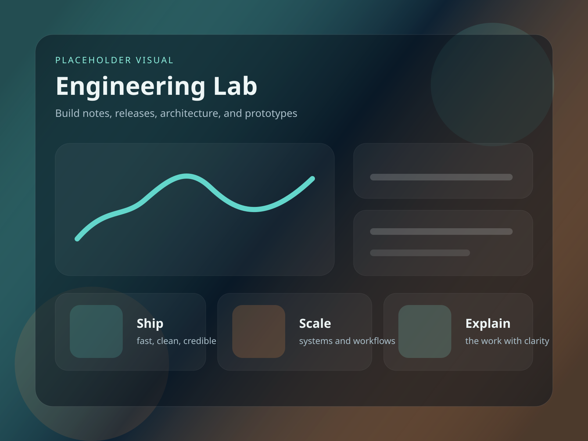
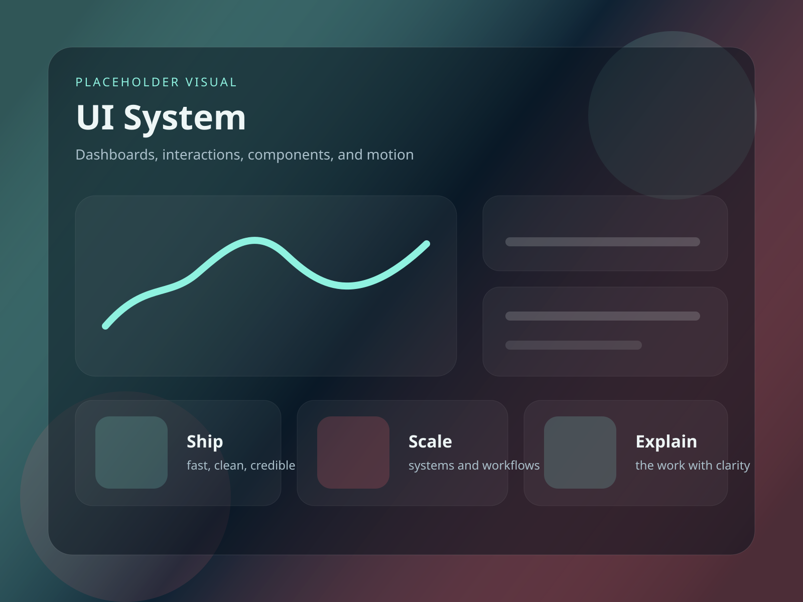
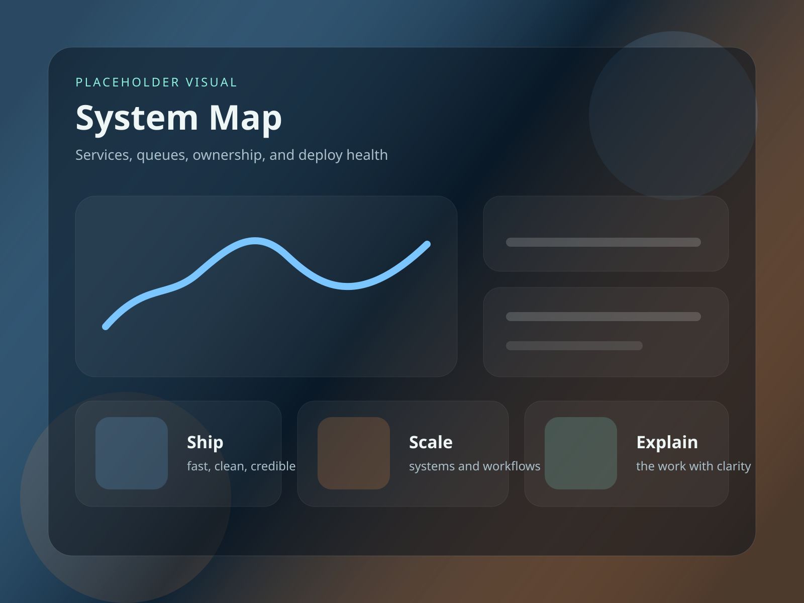
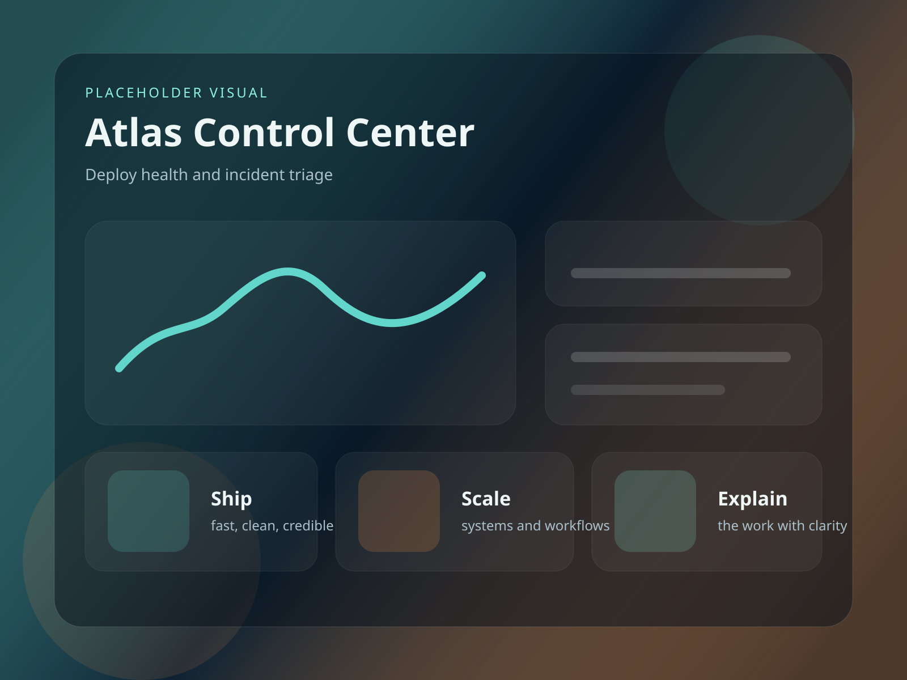
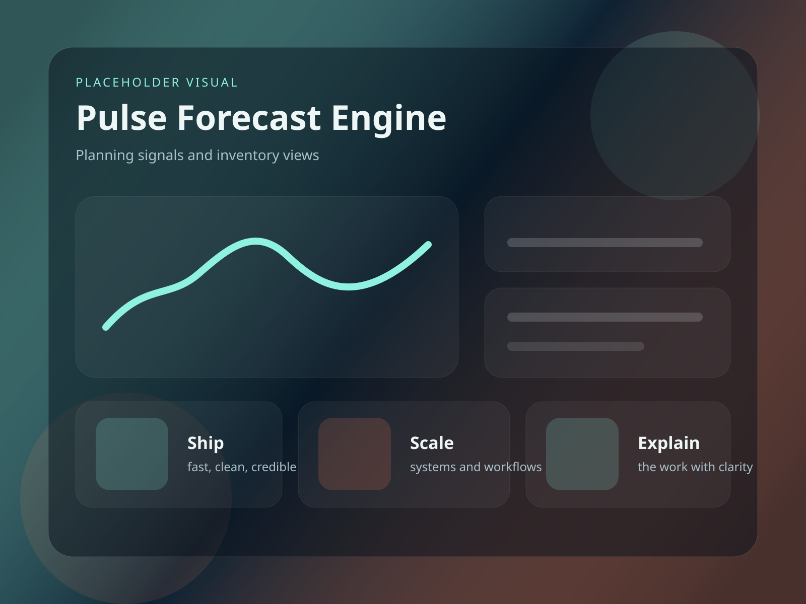
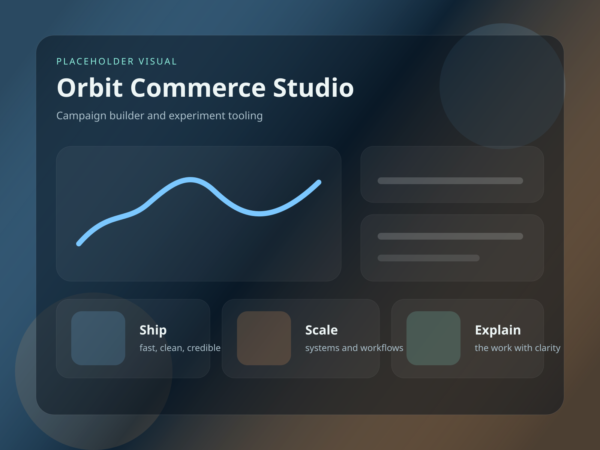
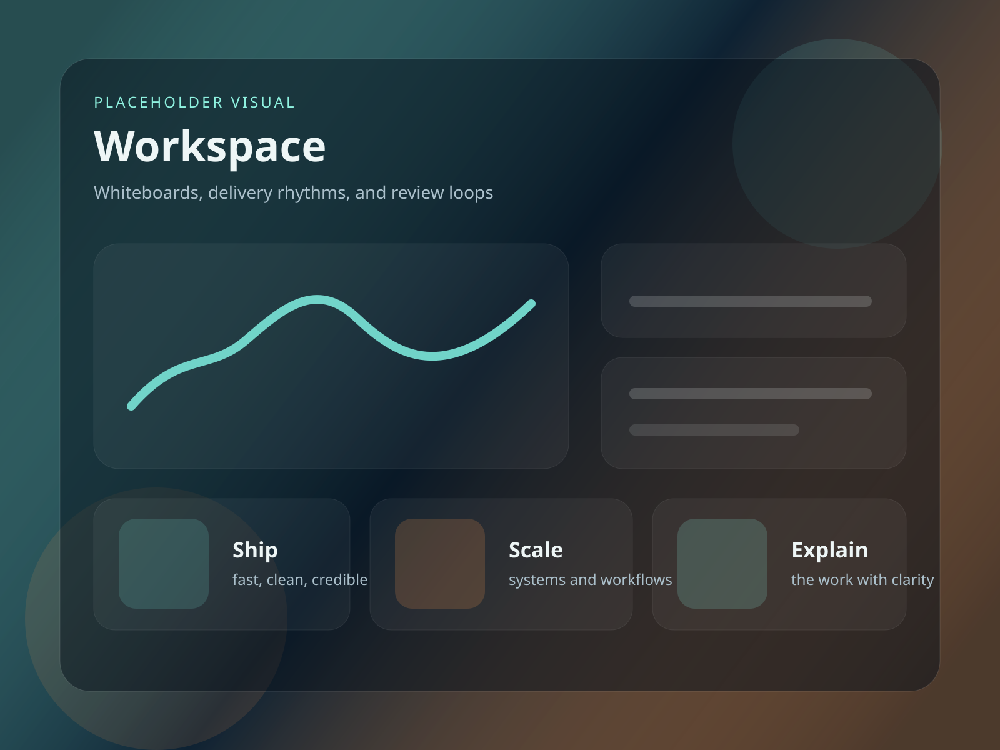
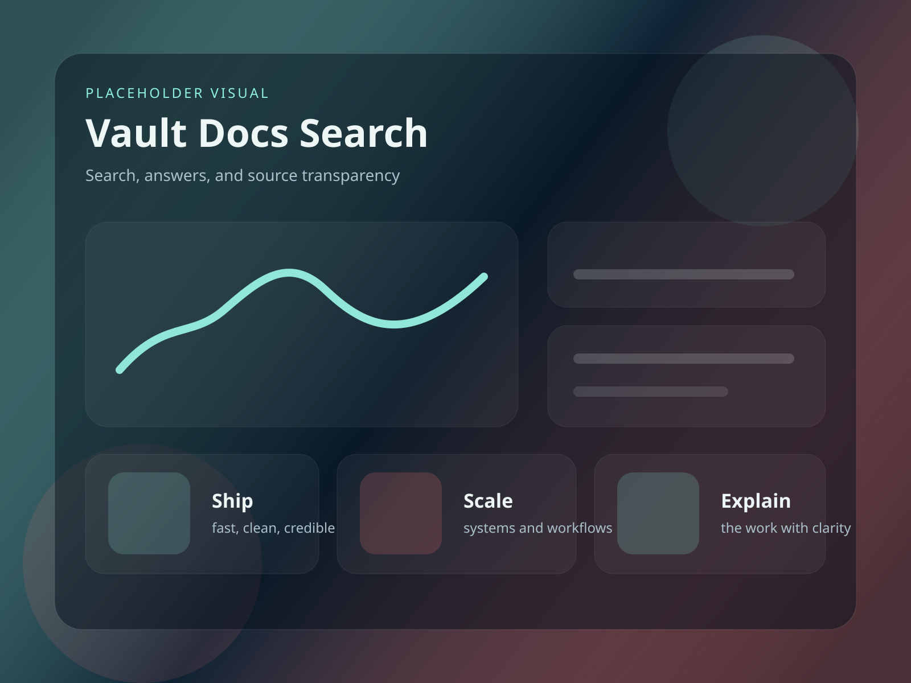

Alexander Amadeo-Ranch | Aerospace Engineering student at UC Irvine
I am building toward work in structures, simulation, and technically hands-on aerospace engineering.
This portfolio now reflects the strongest details available from my resume: student engineering work, analysis-heavy projects, manufacturability-minded design, and the tools I use most often. Deeper case studies and drive materials can be added in a later pass.
- Studying Aerospace Engineering at the University of California, Irvine
- Current focus: spacecraft structures, simulation, CAD, and fabrication-aware design
- Strongest tools include SolidWorks, AutoCAD, ANSYS, MATLAB, Python, Altium, LabVIEW, Java, JavaScript, and HTML/CSS



Resume-Backed Work
Three projects I can already describe with confidence.
I have not uploaded my full drive portfolio yet, so this section stays tightly tied to the project details already present in my resume.
See the project page
UCI CubeSat Structures
Resume-backed work in spacecraft structural support, including static and modal analysis, subsystem integration awareness, and mechanical design decisions tied to how parts actually fit together.
- Static and modal analysis on structural components
- Mechanical-to-PCB integration support where interfaces mattered
- Manufacturability-minded design instead of analysis in isolation

Micrometeoroid and Ice Impact Mitigation
Studied how ice-based mitigation concepts behave in a lunar context, with attention to scaling, impact damage, mass tradeoffs, and engineering feasibility.
- Physics-based tradeoff analysis across candidate concepts
- Damage and scaling reasoning turned into clear visuals
- Feasibility framing that kept the analysis decision-useful

Photon Paths Near a Black Hole
Built an interactive MATLAB project around photon scattering near a black hole, using the Paczynski-Wiita potential to approximate relativistic effects in a readable visual way.
- Interactive MATLAB visualization for a complex physics problem
- Approximate relativity modeling tied to a clear output
- Analytical communication through computation and visuals
Technical Focus
Three threads currently define the portfolio.
These spotlights stay grounded in the material I have already uploaded: spacecraft structures, impact analysis, and computational physics.
UCI CubeSat Structures
Structural work for a student spacecraft team, with attention to analysis, interfaces, and the practical constraints that come with real hardware.
Growing deeper in structures and engineering analysis
The strongest fit for this portfolio right now is work that blends structural thinking, simulation, manufacturability, and real hardware awareness.
Analytical first, practical second, communicative throughout
I like turning technical constraints into something buildable, explainable, and useful to the rest of the team rather than treating analysis as a separate silo.
Resume-backed now, deeper case studies later
This version intentionally stays narrow because my drive portfolio is not uploaded yet. The next pass can add screenshots, diagrams, and longer writeups once that material is ready.


Portfolio Note
What is grounded in source material today.
The strongest supported details right now are my name, school, contact information, tool stack, and the three technical themes shown on this site. I avoided inventing testimonials, full case studies, or extra project claims beyond that.
Identity and direction
Alexander Amadeo-Ranch, Aerospace Engineering student at UC Irvine, building toward structures and simulation-heavy work.
Technical stack
SolidWorks, AutoCAD, ANSYS, MATLAB, Python, Altium, LabVIEW, Java, JavaScript, HTML/CSS, and fabrication-oriented workflows.
Full case study depth
Drive-based project materials, screenshots, diagrams, and longer explanations can be layered in once you upload them.
Next step
If structures, simulation, or technically hands-on engineering are relevant, let's connect.
This version of the site is intentionally simple: the goal is to show the core story cleanly now, then expand it once the full portfolio materials are uploaded.
Core tools
SolidWorks, AutoCAD, ANSYS, MATLAB, Python, Altium, LabVIEW, Java, JavaScript, HTML/CSS, and fabrication-aware engineering workflows.
Best next additions
Drive portfolio screenshots, longer CubeSat writeups, deeper analysis notes, and a few more project visuals once those materials are ready.